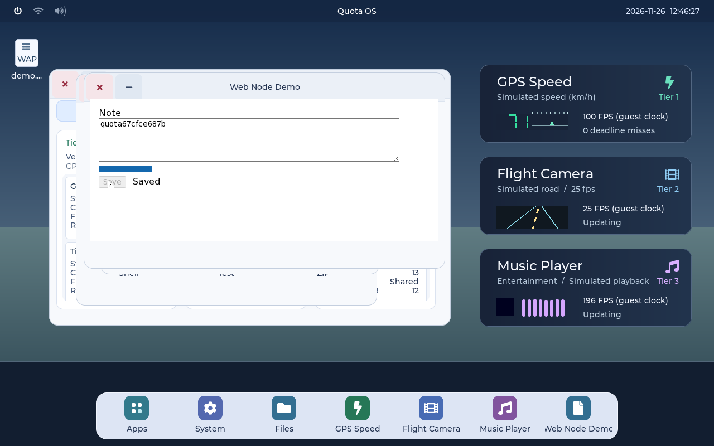
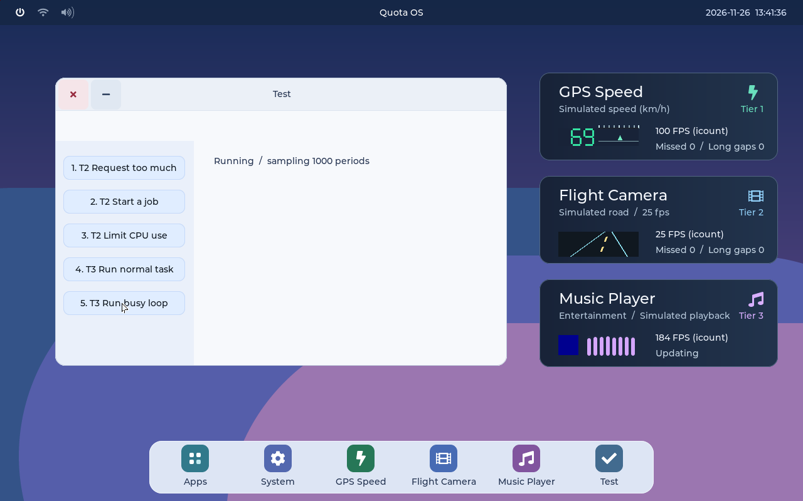

一级
厂商预留
GPS Speed 和系统定时服务使用固定 CPU 时间槽。即使桌面任务忙等，关键任务仍按槽表获得执行机会。
面向 ARM64 的资源配额操作系统
Quota OS 是一款以资源配额为核心的操作系统。内核为关键任务预留执行时间，按容量接纳应用，并将剩余资源交给普通任务共享。


示例应用GPS Speed、Flight Camera 和 Music Player 的卡片右侧标出各自的级别。Flight Camera 以 25 FPS 为目标模拟车道动画。
一级
GPS Speed 和系统定时服务使用固定 CPU 时间槽。即使桌面任务忙等，关键任务仍按槽表获得执行机会。
二级
Flight Camera 声明最低需求。用户同意且容量足够才启动，内核按周期兑现已准入的最低配额。
三级
Music Player 和桌面交互共享剩余 CPU。内核限制总池，池内应用各自承担竞争和延迟。
两个发行版共用 ARM64 配额内核和 LVGL 桌面。一、二级资源配额型应用，比如速度仪表等，适合用C LVGL开发；三级无配额应用，选择 Web Node模式开发；系统已经集成完整开发环境；直接打包上传到系统即可运行。
| 项目 | C LVGL | Web Node |
|---|---|---|
| 镜像大小 | 701,852 B · 685.4 KiB | 374,867,224 B · 357.5 MiB |
| QEMU 验证内存 | 64 MiB | 1 GiB |
| 系统实现 | C · AArch64 ASM · LVGL | C · AArch64 ASM · LVGL · C++ (Blink, V8, Node.js) |
| 应用开发 | C + LVGL | C + LVGL + HTML / CSS / JS / Node.js |
未压缩启动镜像，2026-11-26 实测构建。Web Node 包含共享运行时、动态库、字体和启动数据；Web Node Demo 的 demo.wap 仅 1,705 字节。

在 C LVGL 版中，用 C 编写驱动或 LVGL 界面，执行 bash tools/build-lvgl-guest.sh，在 QEMU 的 Apps → Test 检查配额。

Web Node 的系统开发先联合构建 Blink、Node 和共享 V8，再嵌入镜像。应用开发只需将清单、HTML 和可选的后台 JS 打成 WAP，在 Files 双击，保存后用同一磁盘冷启动验证。
同样是预留 CPU 时间，给一组线程分配最低份额、给单个线程设置周期预算、为整个分区排定时间窗，解决的是不同的问题。下表从分配对象和运行规则比较五种做法。
| 系统与机制 | CPU 时间分给谁 | 预算怎样生效 |
|---|---|---|
| Quota OS | 按应用级别分配 | GPS Speed 使用固定时间槽。Flight Camera 经用户批准且容量足够时获得周期预算。Music Player 与其他三级应用共享有总上限的剩余时间。 内核配额实现 |
| QNX APS | 同一分区内的一组线程 | 为分区配置最低 CPU 比例。调度器在滑动时间窗口内核算用量；其他分区用不完预算时，有工作可做的分区可以多运行。 QNX 调度说明 |
| seL4 MCS | 可绑定到线程的调度上下文 | 每个上下文指定预算和周期。客户端通过同步 IPC 调用被动服务时，可借出自己的调度上下文，服务执行时间计入调用方预算。 seL4 调度上下文教程 |
| Linux SCHED_DEADLINE | 申请截止期调度的线程 | 线程声明运行预算、相对截止期和周期。内核检查带宽后决定是否准入，按调度截止期安排执行；在默认策略下，预算耗尽的线程须等待补充。 Linux 内核调度文档 |
| VxWorks 653 | 预先配置的应用分区 | 模块按时间表轮流运行各分区。窗口内由分区调度器按优先级选择任务；窗口结束后，模块切换到表中的下一个分区。 Wind River 时间分区说明 |
Quota OS 的公开测试在单核 ARM64 QEMU 中记录调度周期和来宾帧缓冲提交。各系统在同一硬件上的显示延迟仍待测量。
在单核 ARM64 QEMU 中，两版各独立启动 100 次。每轮让三级任务忙等 10 秒，同时施加内存和磁盘压力，记录 GPS Speed 和 Flight Camera 每次写完来宾帧缓冲的时刻。
| 发行版 | 通过轮数 | GPS Speed 帧数 / 最大间隔 | Flight Camera 帧数 / 最大间隔 |
|---|---|---|---|
| C LVGL · 64 MiB | 100 / 100 | 100,359 / 10.000 ms | 25,091 / 40.000 ms |
| Web Node · 1 GiB | 100 / 100 | 100,755 / 10.000 ms | 25,184 / 40.000 ms |
按 QEMU icount 虚拟时钟的原始 tick 比较，200 轮中没有一次相邻提交间隔超过对应的 10 ms 或 40 ms 门限。两版均无提交截止期漏期、二级预算欠付或三级总池超限。测量终点是来宾帧缓冲写入完成，宿主窗口呈现和物理屏幕刷新延迟仍待测量。


如果希望从仓库启动，先安装 Git 和支持 ARM64 系统模拟的 QEMU，再运行以下命令。
git clone https://github.com/leiquan/Quota-OS.git
cd Quota-OS
bash tools/run-files.sh在装好 Homebrew LLVM 和 LLD 的 macOS 上，从仓库根目录执行以下命令。QEMU 使用单核 Cortex-A35 和 64 MiB 内存运行构建出的内核。
bash tools/build-lvgl-macos.sh
QUOTA_KERNEL=build/quotaos-lvgl.bin bash tools/run-files.sh在空白的 Notes 文档中点击 C Example 插入示例，也可以手动输入下方代码。选择 Save As...，命名为 demo.c。打开 Apps → Shell，在 quota> 提示符下输入命令，按回车执行。单独输入 cc 会显示使用当前文件名的命令示例。
int main(void) {
puts("Hello, Quota OS!");
return 0;
}cc demo.c -o hello
./hello首版支持不含头文件的 int main(void)，函数体可包含一次 puts 调用和 return 0。程序按三级启动，当前不支持二级启动参数。